09 — Visual Narrative
The Director
A Character Study.
Single-Character Narrative · Brutalist World-Building · AI Visual Direction
What does a creative director look like when you let the image do the work? Not a headshot, not a portfolio piece — a character. Someone with history on his face and decisions in his posture. Someone working in a space that reflects the weight of what he does.
This is a personal project in the purest sense. The brief was a single constraint: build a believable human being inside a believable world, using only language and intent. No reference photography. No location scout. Fourteen frames. One character. One room. One story.
The brutalist studio came first — the architecture of serious work. Then the man. Then the details that prove he's been here a long time: the worn concrete desk, the cinema lenses arranged like tools not trophies, the storyboards pinned to raw concrete walls, the coffee that's gone cold.
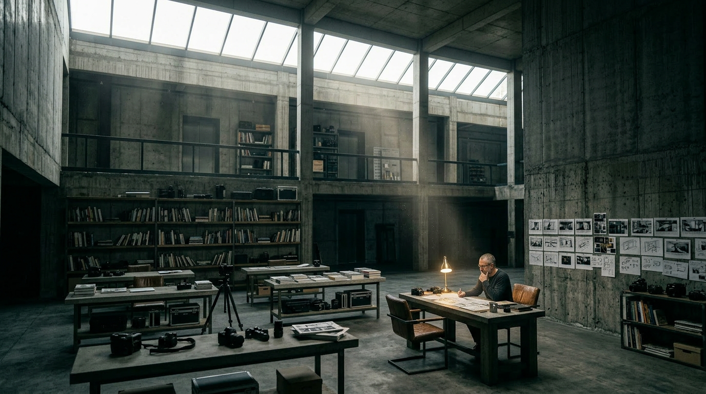
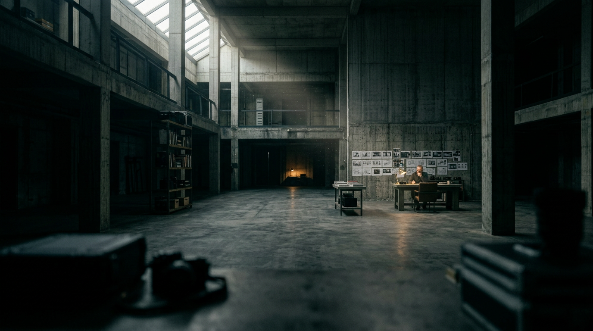
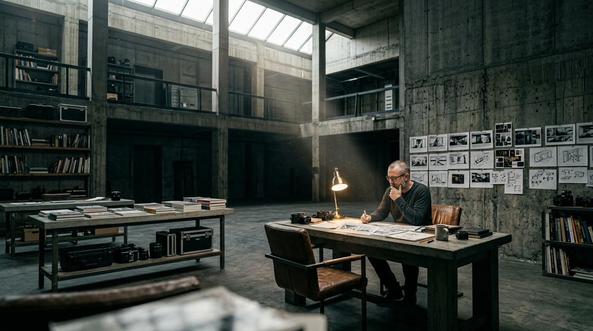
"The studio doesn't exist. That's what makes it work — it's every serious studio distilled into its purest form. Brutalist concrete, natural light from above, the silence of a space designed to hold one person's concentration."
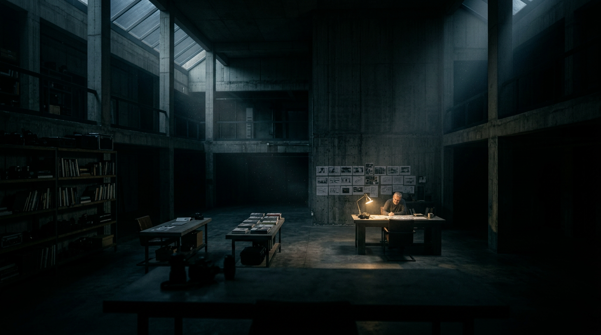
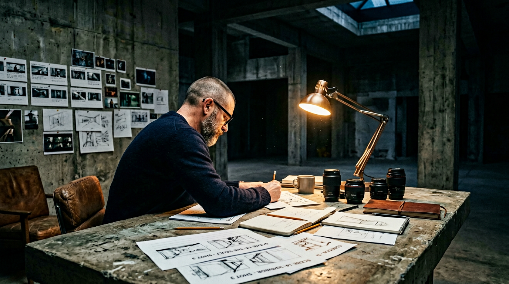
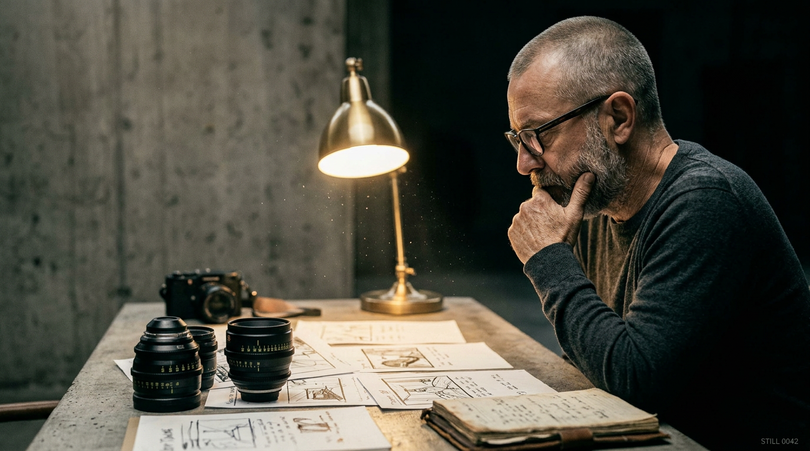
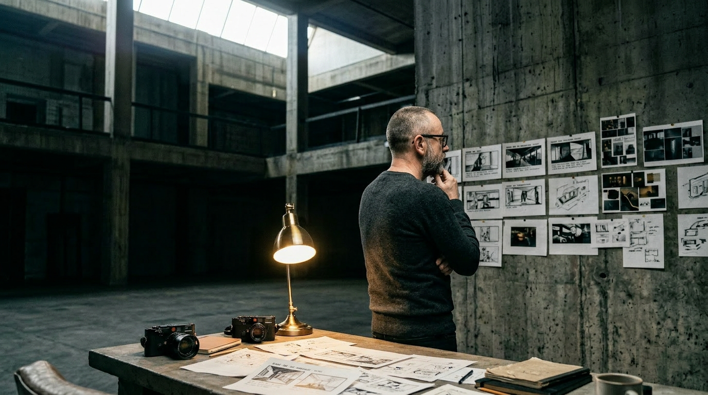
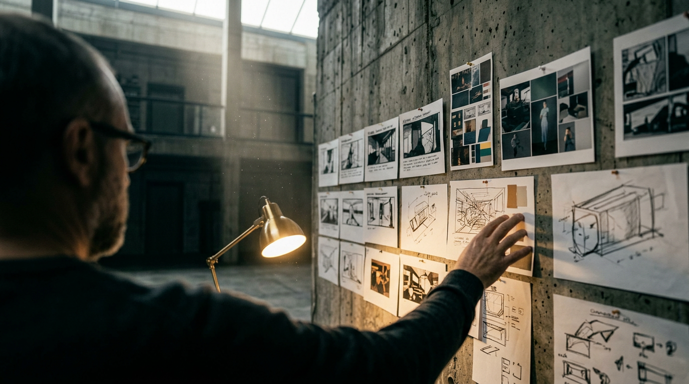
"He's in his early fifties. He has a matte black wedding band — you only notice it in the hands shot. He keeps cinema lenses on his desk alongside his cameras. He drinks coffee and doesn't finish it. He's been doing this for thirty years and he still stays late."
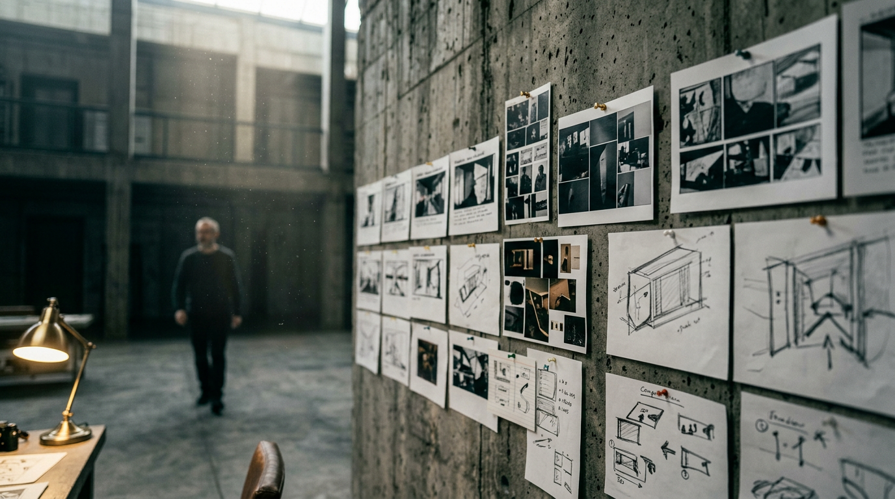
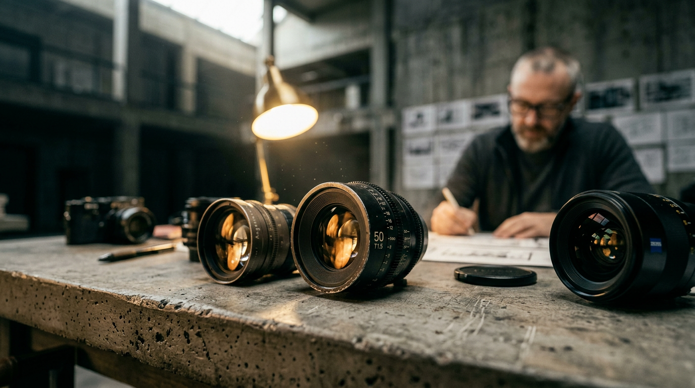
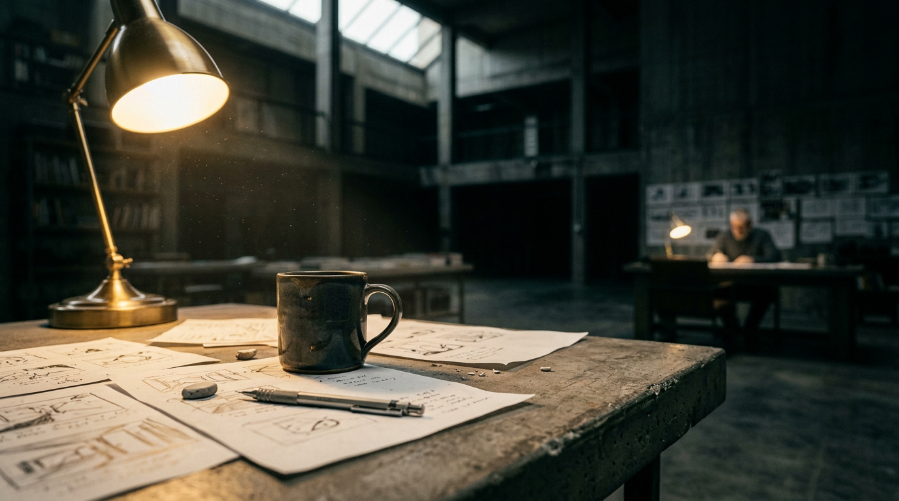
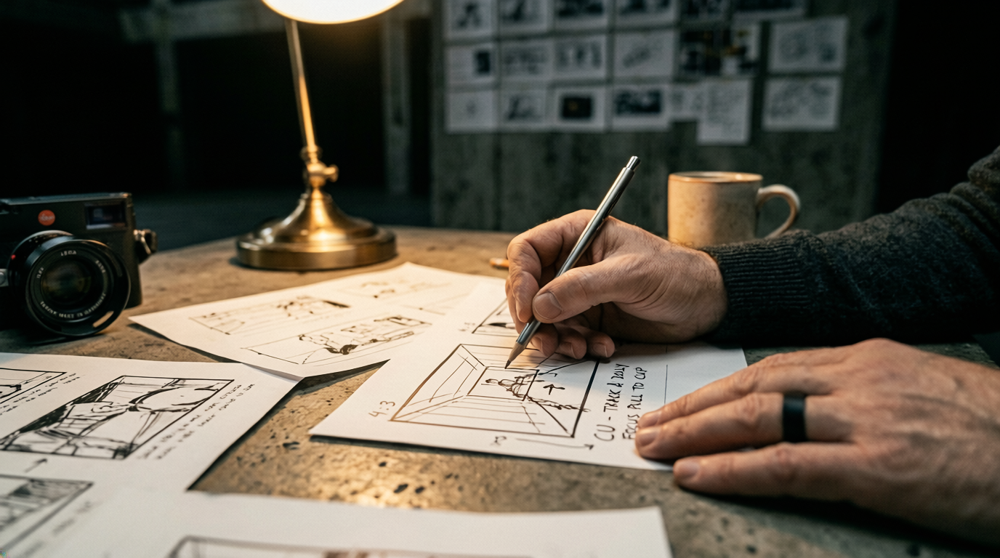
"A character is just a set of decisions — where he works, what he keeps on his desk, whether he wears a ring. Make the right decisions and the model does the rest. The studio doesn't exist. The man does."